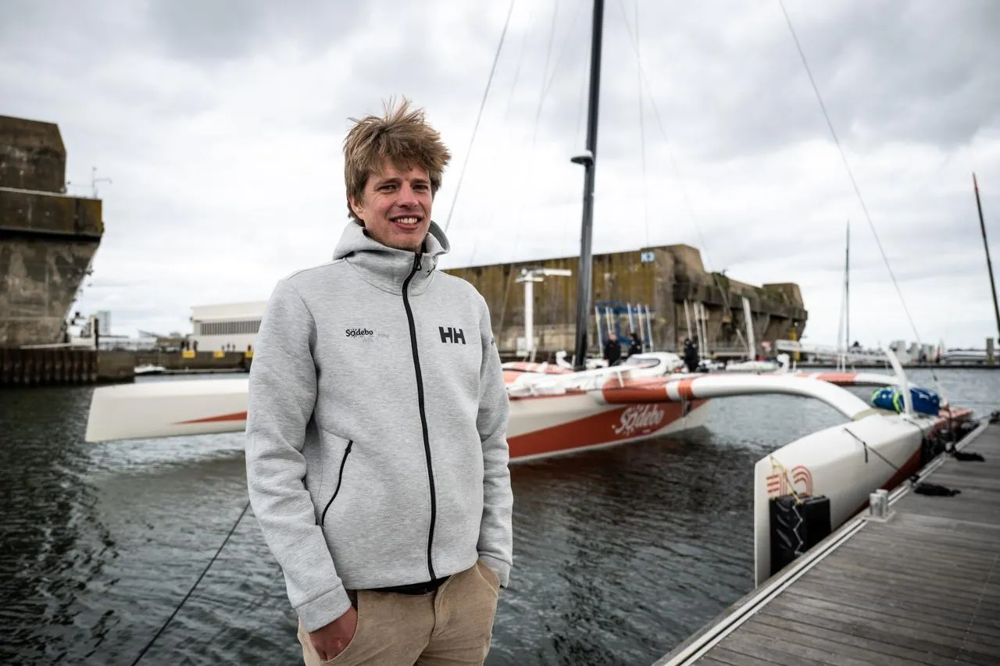
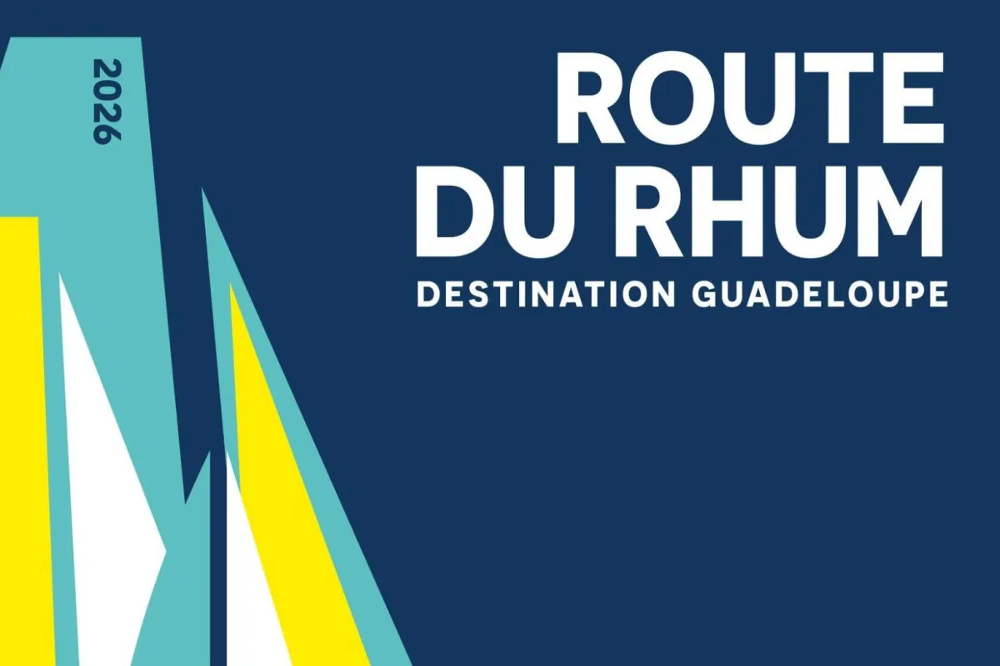
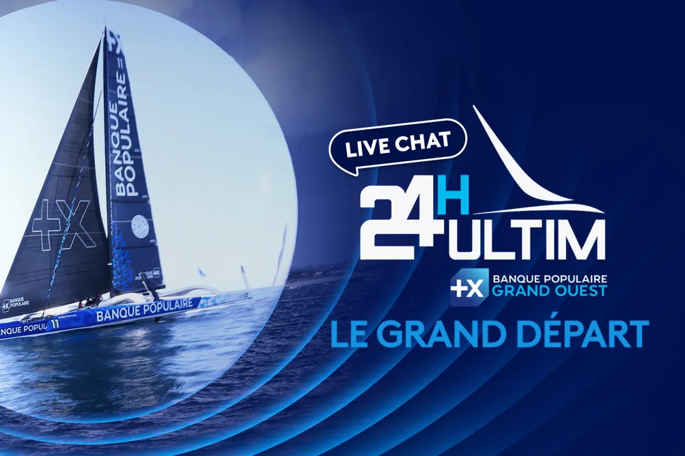
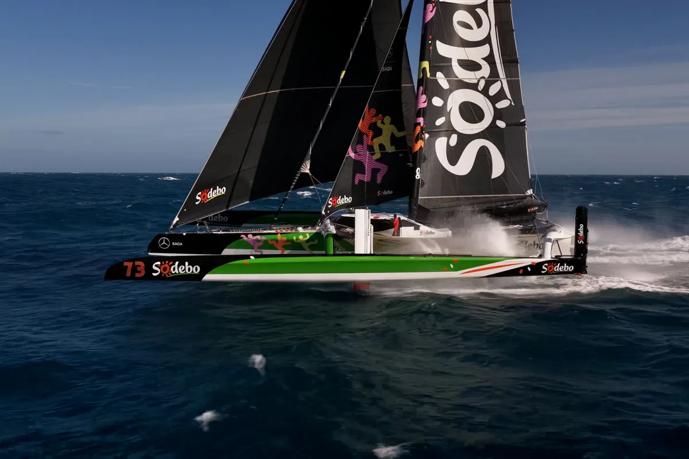
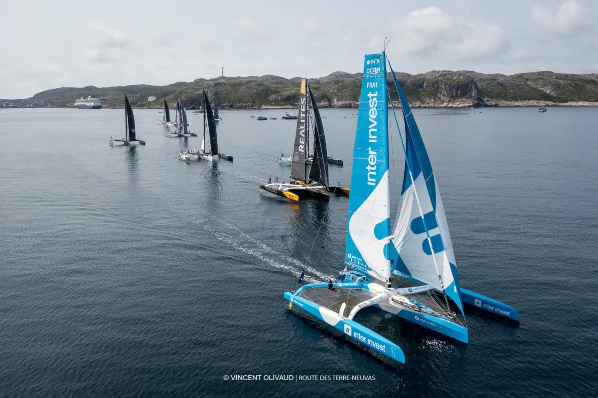

En course · Route du Rhum 2026
Léonard
Legrand
Malouin, Ingénieur, Ultim, Recordman, Ocean Fifty, Skipper

Dix ans chez Sodebo
Qui je suis
De l'ombre
à la lumière
Je suis arrivé chez Sodebo Voile en 2015, comme alternant en électronique. Pendant dix ans, j'ai travaillé au cœur des systèmes embarqués du maxi-trimaran Sodebo Ultim 3, et j'ai préparé le bateau de Thomas Coville pour les Routes du Rhum 2018 et 2022.
En janvier 2026, on a décroché le Trophée Jules Verne avec l'équipage de Sodebo Ultim 3. Dans la foulée, je suis passé de l'autre côté : skipper de Sodebo Fifty, pour ma première transatlantique en solitaire. La Route du Rhum, c'est mon rêve d'enfant.
En janvier 2026, on a décroché le Trophée Jules Verne avec l'équipage de Sodebo Ultim 3. Dans la foulée, je suis passé de l'autre côté : skipper de Sodebo Fifty, pour ma première transatlantique en solitaire. La Route du Rhum, c'est mon rêve d'enfant.
Palmarès
Mes courses
Du record autour du monde en équipage à la transat en solitaire, mon parcours en quatre courses.

Route du Rhum
En course
Saint-Malo › Pointe-à-Pitre, ma première transatlantique en solitaire. Le rêve d'enfant.
Voir la course Route du Rhum
24H Ultim
3e, et meilleur temps des Ocean Fifty sur les speed runs
Ma première vraie course de la saison aux commandes de Sodebo Fifty, et un premier podium.
Voir la course 24H Ultim
Trophée Jules Verne
1er, record en 40 j 10 h 45 min 50 s
Le tour du monde en équipage le plus rapide, aux côtés de Thomas Coville. Mon premier grand record.
Voir la course Trophée Jules Verne
Route des Terre-Neuvas
2e
Une course au large en Ocean Fifty, pour faire mes armes sur ce type de trimaran.
Voir la course Route des Terre-Neuvas